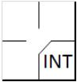

Defensive interference
Defensive interference is an act by a fielder that hinders or prevents a batter from hitting a pitch [OBR Definition of Terms].
The batter becomes a runner and is entitled to first base without liability to be put out (provided he advances to and touches first base) when … The catcher or any fielder interferes with [the batter ].
If a play follows the interference, the manager of the offense may advise the plate umpire that he elects to decline the interference penalty and accept the play. Such election shall be made immediately at the end of the play. However, if the batter reaches first base on a hit, an error, a base on balls, a hit batsmen, or otherwise, and all other runners advance at least one base, the play proceeds without reference to the interference [OBR 5.05(b)(3)].
|  |
The abbreviation to use for the batter’s advance to first is "INT", and counts as an error against the catcher (or the fielder who committed the interference). The interference does not count as a time at bat.
|